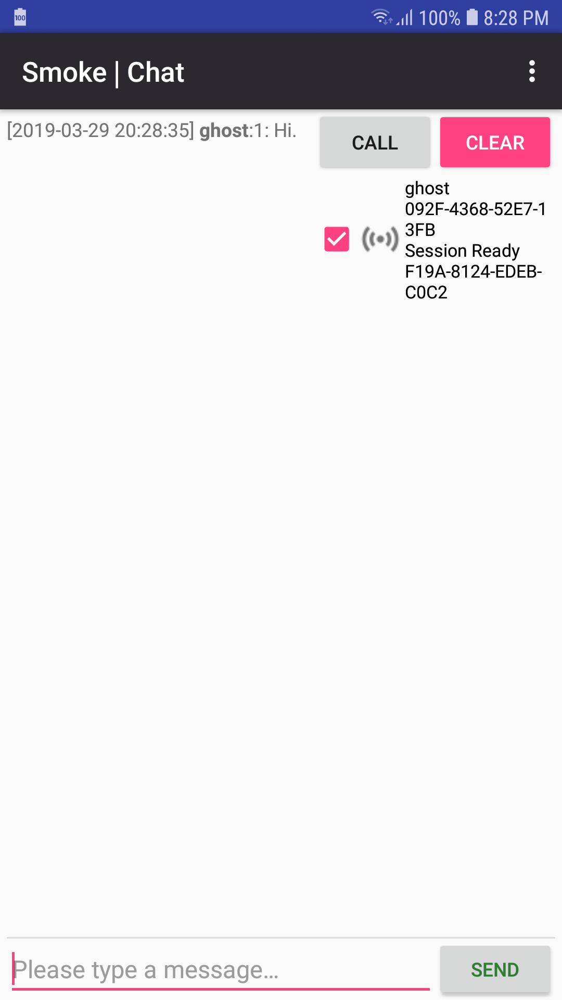
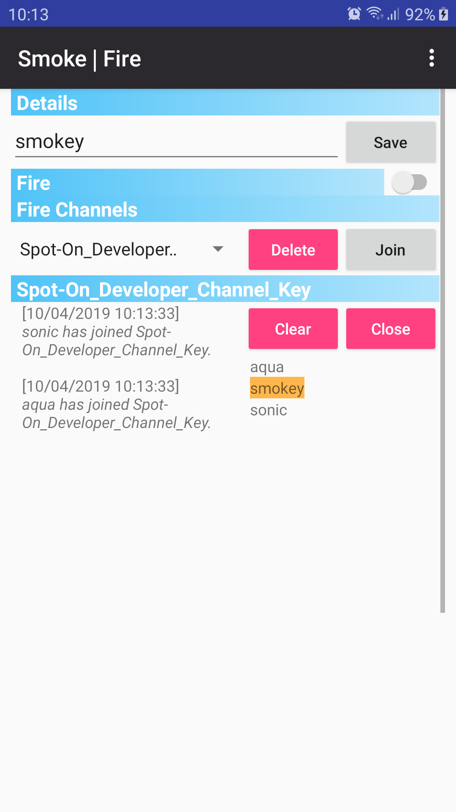
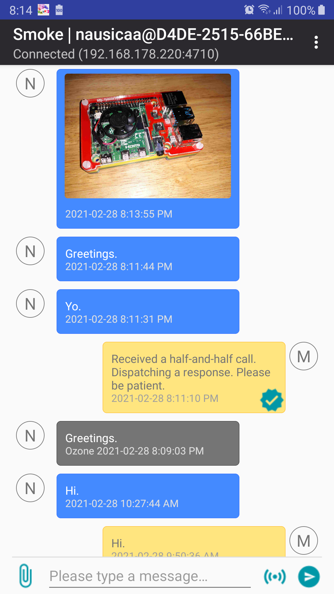
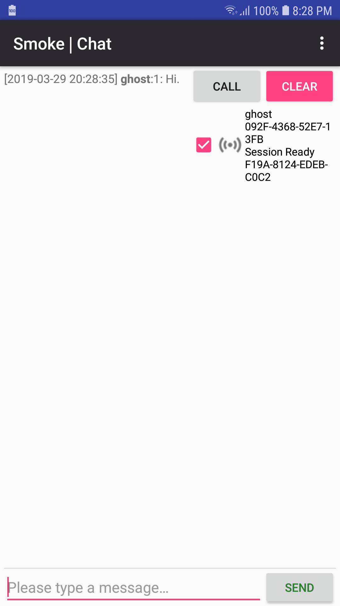
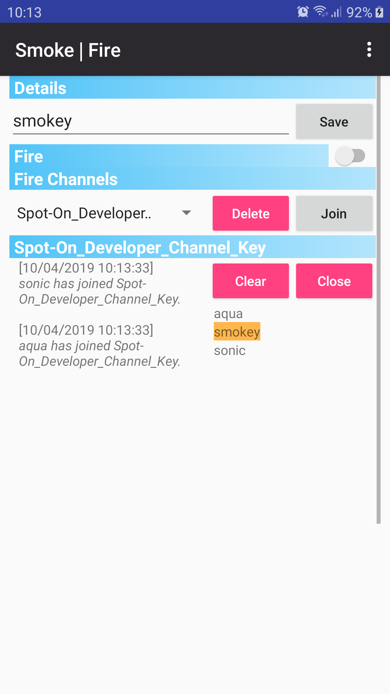
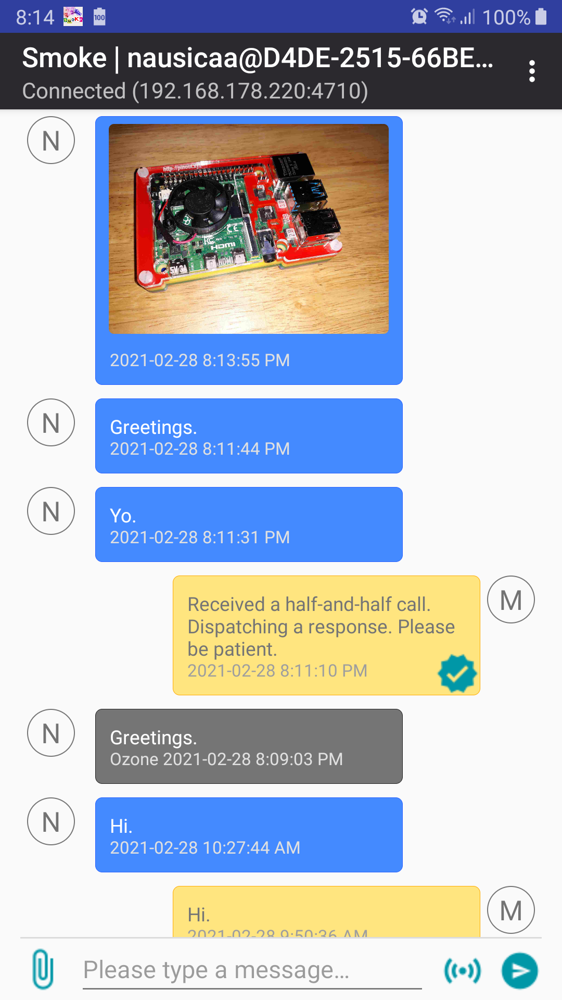

Welcome to Smoke!
Smoke is an open source communications project. The purpose of Smoke is to introduce and investigate the Echo protocol on mobile technologies.
 







Some of the characteristics of Smoke are summarized below.
- Aliases. Preserve your contacts.
- Almost zero-dependency software.
- Automatic, oscillatory public-key exchange protocol, EPKS, via SipHash.
- BSD 3-clause license.
- Decentralized. TCP, and UDP multicast and unicast.
- Does not require Internet connectivity.
- Does not require registration. Telephone numbers are not required.
- Fiasco forward secrecy.
- Introduces Cryptographic Discovery. Cryptographic Discovery is a practical protocol which creates coordinated data paths.
- Juggling Juggernaut Protocol!
- McEliece.
- Message structures do not explicitly expose their meanings. Header-less protocols!
- Mobile servers via SmokeStack.
- Optional foreground services.
- Post offices for messages of the past.
- Private servers.
- Public and private public-key servers.
- SSL/TLS through SmokeStack.
- Semi-compatible with Spot-On via Fire.
- Software congestion control.
Release Notes
2019.04.04- Allow removal of participant public keys.
- Close Java streams.
- Default socket buffer sizes.
- Juggernaut Protocol.
- Minor Fire layout changes.
- Release resources on onPause(), onStop().
- Removed deepCopy().
- Smoke Alias. Change your credentials while preserving your relationships.
- Allow removal of specific messages in MemberChat.
- Decreased maximum buffer size from 32 MiB to 8 MiB.
- Prefer delete() over setLength(0) on buffers.
- Recycle bitmaps.
- Bouncy Castle version 1.61.
- Material icons.
- Optional foreground service.
- Array lengths may not be negative.
- Automatic removal of incorrect network data. Smoke and SmokeStack.
- Corrected conditional in UdpMulticastNeighbor::send(). SmokeStack.
- Disable Nagle's algorithm.
- Energy and iterations.
- Optional initialization of Ozone during neighbor definition.
- Orderly shutdown of schedules.
- Pause schedules, notify if necessary.
- Replaced Spongy Castle with Bouncy Castle. Please replace existing listeners. SmokeStack.
- SNAP!
- Smaller lock regions.
- SmokeStack confirmation for identity sharing of personal identity.
- StringBuilder over StringBuffer if possible.
- Compute SHA-512 display digest of PEM(certificate).
- Inspect length in String::substring().
- New server (tulip-ipv4.tilaa.cloud).
- Allow resending of messages.
- Deleting Fiasco keys lacked proper confirmation.
- Denote messages which have been read by the recipient.
- Denote messages which have been sent.
- Depict Smoke failures.
- Lock SipHash::hmac().
- New participants_messages database fields. Requires new installation.
- Allow generation of only PK material in Settings.
- Allow new participant names via context menus; Settings::Participants.
- Automatically set the Ozone to the Smoke ID on new installations.
- Blocking socket reads.
- Bouncy Castle at version 1.60.
- Calling via ephemeral McEliece; MemberChat only.
- Clear internal messaging log on Chat::Clear.
- Corrected faulty widget listeners in Fire.
- Corrected slight time differences between time stamps in messages destined for SmokeStacks and messages destined for participants.
- Increased key-publishing period from 15 seconds to 45 seconds. Also removed self-publishing.
- Material Design-compliant color selections.
- McEliece parameters m = 12, t = 68. Compatibility with m = 11, t = 50 is preserved.
- Messages in MemberChat will not be duplicated in the Chat activity.
- New Fiasco Keys column in Settings::Participants.
- New chat-message format. Incompatible with previous releases.
- Pause threads when possible.
- Periodically request Ozone messages.
- Private servers through SmokeStack.
- Removed the superfluous name field from the participants database table.
- Replaced complex if-statements with switch statements.
- Several member variables in the Neighbor class were defined as static. Corrected.
- Share capabilities and identities shortly after the SSL/TLS handshake has completed on TCP sockets.
- Shared keys without signatures are now accepted and properly depicted in Settings.
- Sign encryption and signature public keys as pairs.
- Singular member pages. Single image attachments included.
- Uniquely-persistent Fire identities.
- Viewing of member details now available via Settings::Participants context menu.
- LocalBroadcastManager instances.
- Single ID per Fire.
- Congestion-control improvements.
- Corrected nested locks (isNetworkConnected()).
- Insert-or-throw SQLite database queries.
- The ProgressDialog class has been deprecated. ProgressBars have now been added.
- The replace method may not be available in a hash table; put().
- Attempt socket connections regardless of WiFi availability. Insight.
- Automatically import rosemary-ipv4.tilaa.cloud:4710 on new installations.
- Corrected local echo behavior.
- Echo Fire, if possible!
- Fire Digest Key and Salt fields may not be empty. Corrected.
- Host translation must be performed before every socket connection attempt.
- Large-area congestion-control mutex.
- Partition messages over UDP links into 576-byte datagrams.
- Provide the HMAC algorithm during identity distribution.
- The Call widget should only be enabled if a network is present.
- Wonderful documentation.
- Allow empty Fire participant names.
- Allow purging of neighbor queues.
- Automatic, oscillatory EPKS.
- Avoid non-essential operations if network channels are not available.
- Depict corrupted database entries.
- Enabled Nagle's algorithm.
- Introduced McEliece-Fujisaka via Bouncy Castle. Cross-communications supported.
- Minimum password length set to one character.
- New Fire key generation. Destination tags are required for SmokeStack.
- Participant name changes should be reflected in the Chat activity.
- Trim Channel, Digest Key, and Salt values on Fire.
- Fire, or, group communications. Compatible with Spot-On.
- Increased lane widths to 8 MiB.
- Set a non-zero SO_TIMEOUT as some devices do not unblock socket reads after sockets are closed.
- AndroidManifest.xml was missing WakeLock permissions.
- Do not attempt to send duplicate data.
- Do not specify timeouts in socket reads as separate threads are responsible for socket reads.
- Removed all Thread.sleep() instances.
- Replaced StringBuilder Neighbor member with StringBuffer. StringBuffer is thread-safe.
- Signed release.
- WiFi lock.
- Less activity on disconnected neighbors.
- Detect existing key pairs in writeParticipant().
- Smaller database transaction areas.
- Do not automatically purge the temporary identity for offline message retrieval unless some inactive period has elapsed.
- Issue SQLiteDatabase.update() whenever a participant is added. This will allow for replacing of participant names without removal of existing data.
- SmokeStack as a private public key repository.
- Independence Day!